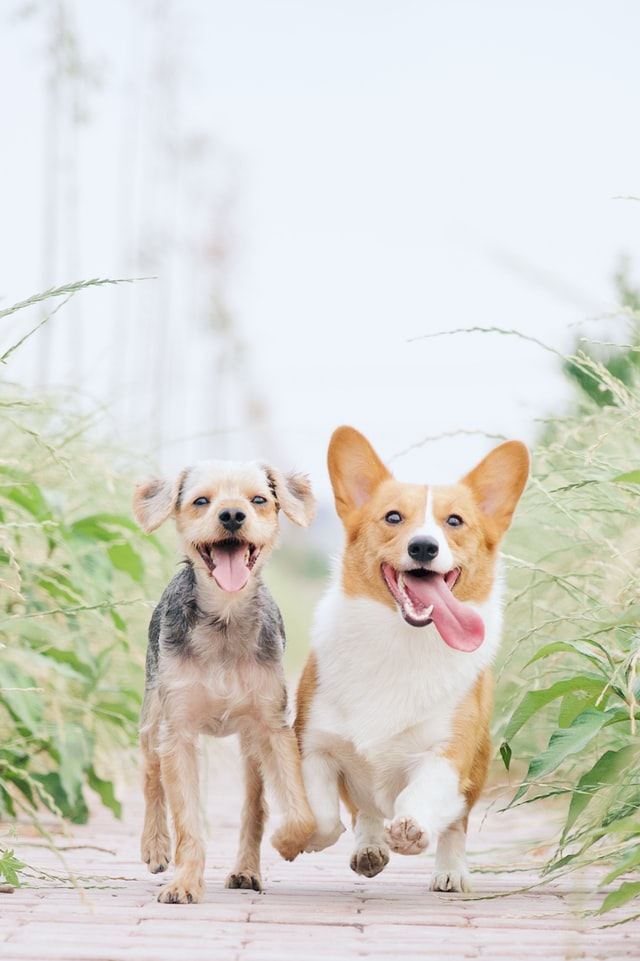
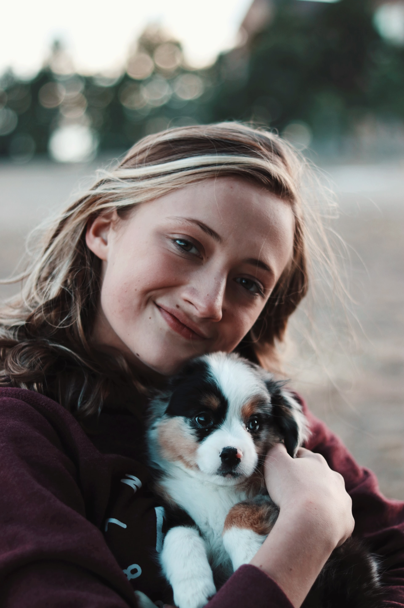

"Kedves Bogáncs Otthon! Szeretnénk Önöknek megköszönni, hogy Tappancs (Mata Hari kislánya) és Nokedli (Akác kölyke) családunkhoz tartozik. Mindketten nagyon jól érzik magukat (legalábbis a sok rosszaságból erre lehet következtetni) és mi is nagyon boldogok vagyunk, hogy velünk vannak! Köszönjük!"

"November 20-án hoztuk haza Zsédát. Mivel műtét után jött el, lábadozik már az első naphoz képest, jól van. Mi úgy érezzük hálás nekünk, nem menne nagyon messzire tőlünk, úgy is lehet mondani szemmel vagyunk tartva. Az alapítványnak köszönjük az okos kutyust, a többi gazdira várónak pedig kívánunk jó gazdikat."
